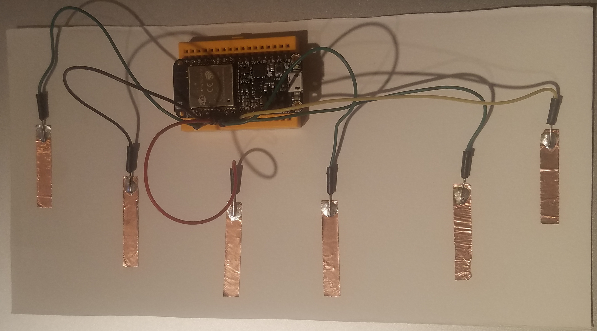
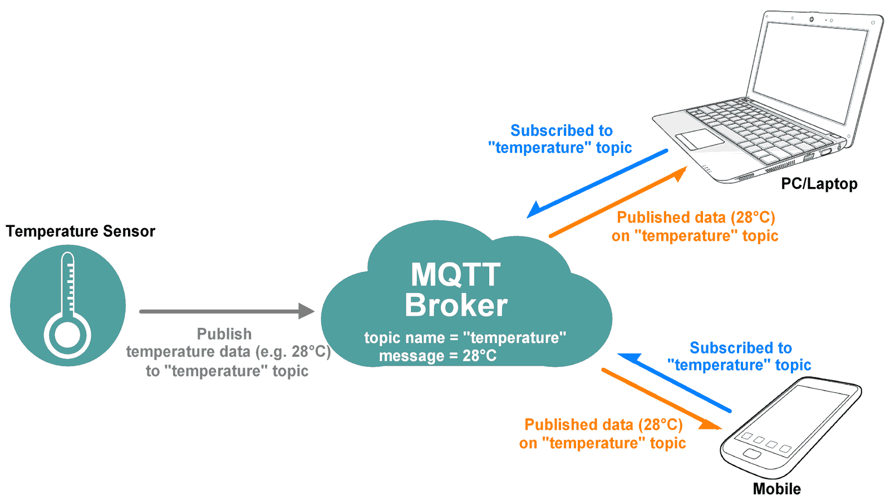
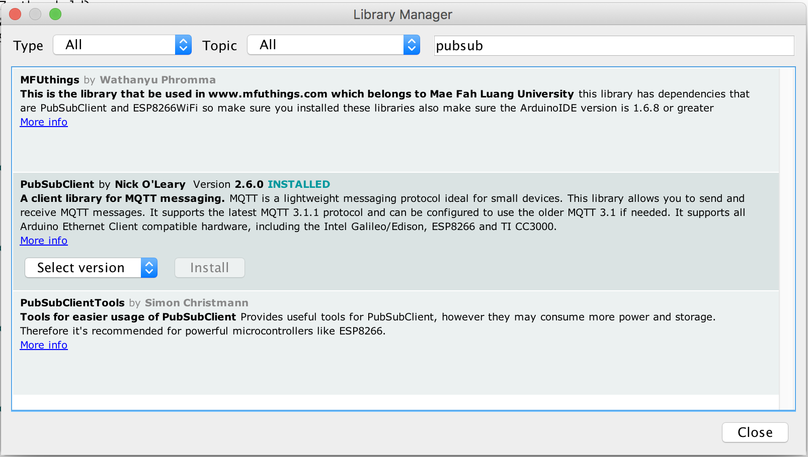

Interactive Environments: Day 1
Interactive Environments: Day 1
Interactive Environments: Day 1
Interactive Environments: Day 1
Grab the code here: https://bit.ly/2yfl7cf
- Re-Introduction to the esp32
- Building a touch interface
- Introduction to MQTT
- Wireless touch interface
Topics for This Week:
The ESP32

ESP32 Pinout

Install This Driver
HereInstall for you platform
HereBuilding out a basic touch interface
- Cut 6 pieces of copper tape
- Arrange them on paper and stick
- Solder one side of a jumper wire to each piece of tape
Steps:
Connect some touch Pins to 14,32,15,33,27,12

- Upload TouchRead_Serial
- Open the serial port to and set the baud to 115200
- Test touching the copper pads
Steps:
We will come back to this in a bit


Open a terminal
sudo npm install mqtt -g
Open a terminal
npm install mosca pino -g
mosca -v | pino
Open a second terminal
mqtt sub -t '/hello' -h 'localhost'
Open a third terminal
mqtt pub -t '/hello' -h 'localhost' -m 'hi from me'
Open a third terminal
mqtt pub -t '/hello' -h 'localhost' -m 'My message'

Client which publish and subscribe
MQTT.JSServer which brokers messages from the clients
MoscaIn Arduino install the PubSubClient Library
Upload ESP32TouchInterruptMQTT.ino
Set the Wifi to Gray Area Incubator and grandstand
Set the MQTT server to your IP address
cd to mqtt_ws and open in text editor
in the terminal npm install && node index.js
Open localhost:3000
close that last program by hitting CTRL+C twice
cd to mqtt_ws_maptastic and open in text editor
in the terminal npm install && node index.js
Open localhost:3000
close that last program by hitting CTRL+C twice
cd to mqtt_ws_maptastic_video and open in text editor
in the terminal npm install && node index.js
Open localhost:3000
Conductive paint
https://www.bareconductive.com/